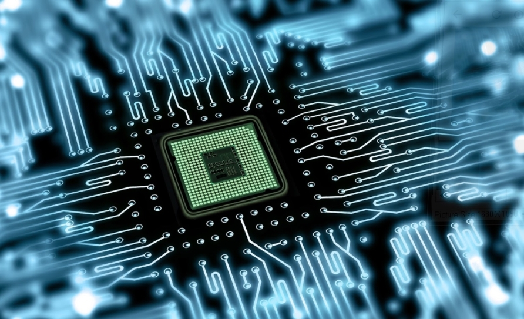
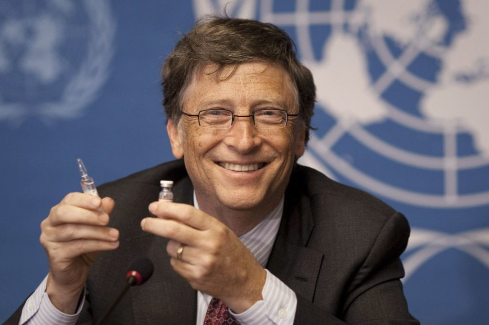
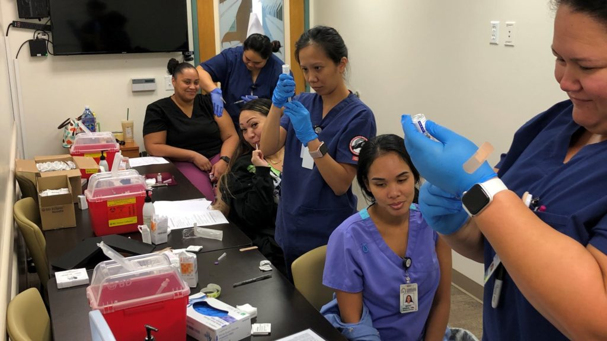
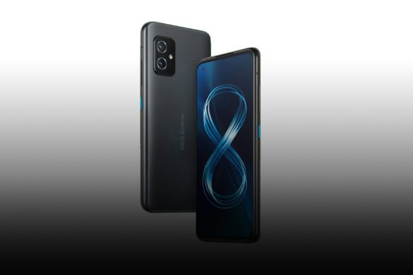
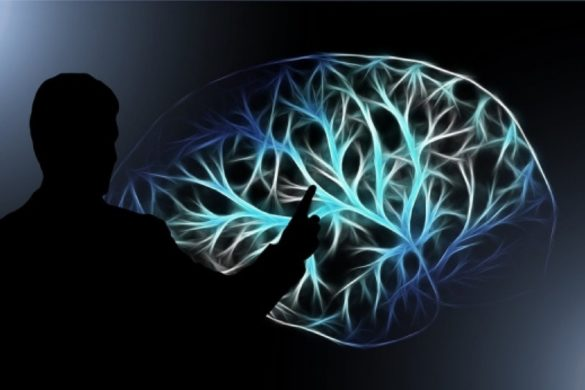
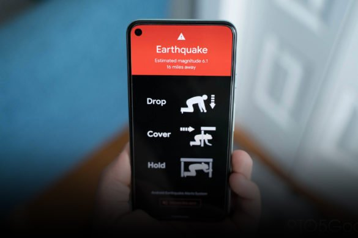
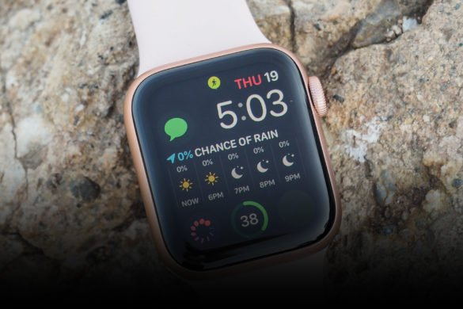
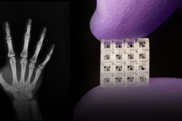

Rejection of absurd online conspiracies and the alleged Bill Gates Microchips
Tech tycoon Bill Gates has been a target of many conspiracy theories, but the microchip theory is one for the books.A Facebook post titled ‘Gates wants us microchipped, and Fauci wants us to carry vax certificates‘ received over 22,000 shares and was reposted on other platforms.
People thought Gates was spending millions of dollars to ensure that all medical procedure, such as injects, would include the location-tracking chips.This claim reached all over the world, and he was termed as a ‘mastermind’.Experts debunked these claims at the beginning of the pandemic, but the allegations continue to persist.
The head of the Russian Communist Party said that the globalists support a mass chip implantation under the vaccine’s pretext against the virus.Most people thought that Bill Gates and the others are using the virus as an excuse to insert micro-chip in people.
As per the
YouGov Poll , around 28% of Americans assume that Bill Gates wants to use vaccines to implant the microchips in people.People believe that Bill Gates is plotting to track people’s locations through the said chips.
This all began when Gates said in an interview that he would eventually work on digital certificates that would show who has recovered, who has been tested and who will ultimately receive the vaccine.He did not mention any microchips, though.Despite the evidence that the vaccines are just pieces of genetic material encased in salt, sugar, and fats, this theory was circulated by the anti-vaxxers online.
Gates’ team developed a way to encode patients’ medical history using a small amount of the dye with the vaccine.The shade would be invisible to the naked eye but could be observed by a specialised mobile application using infrared eyes.It is to keep a record of the child’s vaccines.
A possible microchip and vaccine combo could be useful in developing countries where recording and tracing patient data can be a monumental task.The lead author of the study, Kevin McHugh, even mentioned that the quantum dot dye technology is not a microchip or human implantable capsule.
This led to a widely shared article under the headline, ‘Bill Gates will use microchip implants to fight coronavirus’.This article was based on The Gates Foundation’s study that technology could store someone’s vaccine records in a special ink administered simultaneously as an injection would.However, the technology is not a microchip but resembles an invisible tattoo.
The Bill and Melinda Gates Foundation rejected the false claims to the
BBC .They mentioned that digital certificates refer to creating an open-source digital platform to enable expansion and access to safe, home-based testing.
Bill was surprised by how he and the senior White House advisor dealing with the pandemic, Dr Anthony Fauci, came under fire for the microchips’ false claims.Both the experts have claimed that the evil theories are bizarre and have denied them out-rightly.Gates has been vocal about the steps to combat the virus and received criticism from the former President, Donald Trump.
Gates has come under fire for many such false rumours about the vaccines.In a video circulating on the internet, he talks about the vaccines’ efficacy in older people and warns them about the side effects.He said, 'if we have one in 10,000 side-effects, that’s way more… 700,000 people who will suffer from that.'
The conspiracy theories reached the Italian Parliament, where the MP called for Bill Gates to be referred to the International Criminal Court for Crimes against humanity.Incidentally, Itlay has a robust anti-vaccination movement going on, spread mainly by misinformation.The anti-vaxxers are under the impression that the pandemic is made-up, and the vaccine will bring money to corrupt billionaires.
Another wild conspiracy theory was that 5G technology and the coronavirus are somehow related and spreading the disease as part of a Chinese evil plan.YouTube implemented stricter actions to minimise the damage from baseless theories.
Yet, the Bill Gates conspiracy theory about how he planned to use the vaccine to implant microchips to monitor the people’s movement took the cake on the wildest ideas.In an interview with
CNN , Gates mentioned how the lousy combination of pandemic and social media had fuelled more rumours.
The Bill and Melinda Gates Foundation donated millions of dollars for vaccine and treatment research.His foundation even pledged to donate $100 million to the coronavirus vaccine research and treatment, and in addition to this, he donated $1.6 billion to the Gavi Vaccine Alliance.
Jennifer Gates, the oldest daughter, joked on social media about the COVID vaccine not being a result of her ‘genius father’ inserting a microchip into her brain.The conspiracy of location-tracking microchips was out of control on social media.
His daughter debunked the myth, reminding her followers how the vaccine’s active ingredient is the small part of the virus’s genetic material called the mRNA and not a tracking device, of course.
So here is it – there is no evidence that Bill Gates is, and could even, try to play brain hooky to implant microchips and track your every move.
Save my name, email, and website in this browser for the next time I comment.
Posted On: 2021-03-10T13:48:17
Posted By: Kareena Dodeja








Content Date: 2021-03-10
Download Date: 2021-05-30
Document ID: L0C04CT0Z